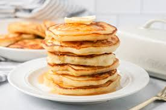

Pancake

Description
These classic pancakes are light, fluffy, and quick to make. They have a tender crumb and a mild buttery flavor that pairs perfectly with maple syrup, fresh fruit, or your favorite toppings.
The batter comes together in one bowl and cooks up golden-brown in just a few minutes per side, making this an ideal recipe for busy mornings or relaxed weekend breakfasts.
Ingredients
- 1 1/2 cups (190 g) all-purpose flour
- 3 1/2 tsp baking powder
- 1 tsp salt
- 1 tbsp granulated sugar
- 1 1/4 cups (300 ml) milk
- 1 large egg
- 3 tbsp melted butter (plus extra for cooking)
- 1 tsp vanilla extract (optional)
Steps
- In a bowl, whisk together flour, baking powder, salt, and sugar.
- In another bowl, beat the egg with the milk, melted butter, and vanilla.
- Pour the wet ingredients into the dry ingredients and stir until just combined; small lumps are fine.
- Heat a non-stick skillet or griddle over medium heat and lightly butter it.
- Pour 1/4 cup batter per pancake onto the skillet. Cook until bubbles form on the surface and edges look set, about 2–3 minutes.
- Flip and cook the other side until golden, about 1–2 minutes more.
- Serve warm with syrup, butter, and fresh fruit.
Go back to home page